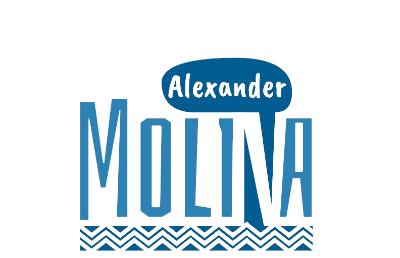
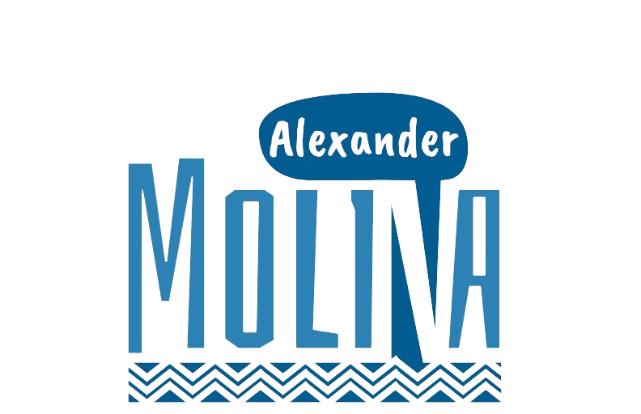
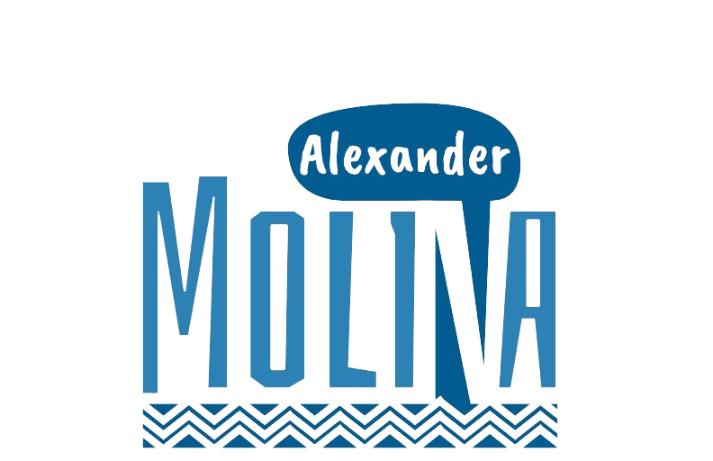
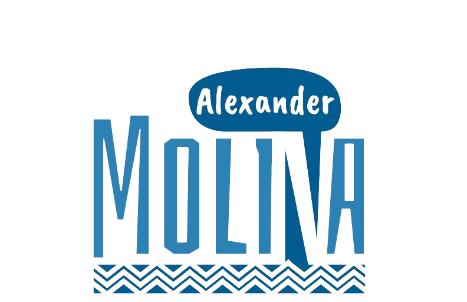

Duplicar el presupuesto para las convocatorias de Investigación en un plazo de 3 años.
Crear la red de semilleros UTP para fortalecerlos; podrán pertenecer directores, profesores catedráticos, trabajadores, personal admin y serán parte del ecosistema de investigación.
Promoveremos la creación de semilleros de investigación que estudien los asuntos de géneros, feminismos, diversidades sexuales y afines con el objetivo de propiciar espacios de participación y construcción académica alrededor de estos temas.
Promoveremos la creación de semilleros de investigación con enfoqué étnico que fortalezcan la generación, promoción y conservación de conocimientos propios de las comunidades indígenas y afrocolombianas que habitan esta institución.
Promover convocatorias para Investigación Fundamental/Ciencias Básicas. Tendrá atención los ODS; planes territoriales; ciencias humanas y artes. Habrá convocatorias a 3 y 4 años.
Es necesario consolidar una unidad especial de investigación, innovación y extensión que articule las diferentes capacidades institucionales para fortalecer el desarrollo local y regional del aparato productivo y la solución de problemáticas sociales específicas identificadas desde diversas instituciones.
Fortalecer la Editorial UTP para aumentar obras en circulación. Fortalecer los equipos de trabajo de las revistas de la UTP.
Conformar Comité Asesor de Investigaciones con investigadores de las facultades para la orientación de la política de investigación. La investigación básica dará elementos para el ecosistema de innovación compuesto por Universidad-Empresa-Estado-Sociedad y atender necesidades del entorno.
Articular el subsistema de innovación UTP a los programas y referentes internacionales. Se hará mediante misiones de innovación, escenarios y articulación con la industria.
Fortalecer Barranqueros con unidad que gestione recursos de la Agencia Presidencial para la Cooperación. Crear equipo operativo de gestión de venture capital y ángeles inversionistas. Vincular profesores de toda modalidad para mentoría.
Se desburocratizará la investigación universitaria para que profesores catedráticos (y estudiantes) puedan inscribir sus propios proyectos de investigación como investigadores titulares, sin necesidad de inscribir sus proyectos através de docentes transitorios tiempo completo o de planta.